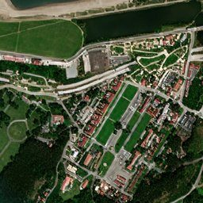
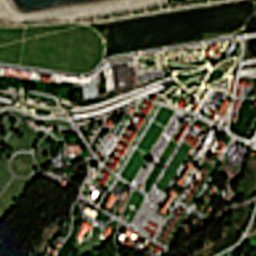
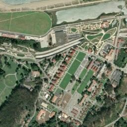
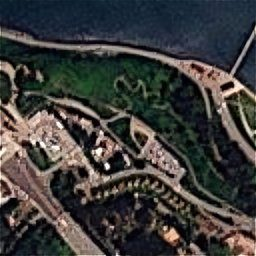

The universal base layer every monitoring task reads directly, from two source tracks: Sentinel-2 enhanced to 1 m GSD (worldwide, every 2–5 days), and PlanetScope enhanced to 1.9 m GSD (daily). No invented detail; geolocation identical to source.
Visual imagery is the picture a human analyst reads directly. The constraint has always been the trade-off between detail and refresh: commercial very-high-resolution scenes resolve fine detail but are tasked, expensive and infrequent, while free wide-coverage sources like Sentinel-2 refresh often but blur out everything below 10 m.
From Sentinel-2 (free, worldwide): Refined Reality enhances the 10 m source to a true 1 m GSD, every 2–5 days, with a 10-year archive — plus a physics-only 5 m "Derived Resolution" (zero ML, zero hallucination) and ×2 → 1.5 m / ×4 → 75 cm super-resolution where extra detail is worth it.
From PlanetScope (commercial, daily): the ~3 m source is enhanced to a 1.9 m Refined Reality with corrected spectral data, and 1.5 m / 75 cm super-resolution — all available in real time on both daily and archive scenes.
In every case the enhancement is physics-based with calibrated sharpening — never a generative model — so geolocation is identical to the source and measurements, overlays and change detection stay trustworthy.
Real. Reconstruction is physics-based with calibrated sharpening; geolocation is identical to the source and there is no invented ("hallucinated") structure.
Sentinel-2 is free and worldwide, enhanced to 1 m every 2–5 days; PlanetScope is commercial and daily, enhanced to 1.9 m. Both are physics-enhanced, not super-resolution hallucinations.








Tell us the ground you need to watch — we'll show you what SkySpera can do with it.
Talk to us